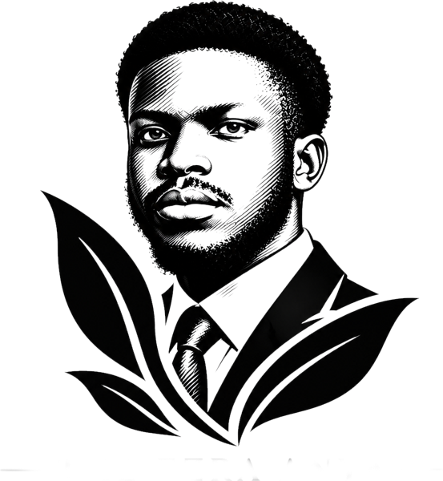
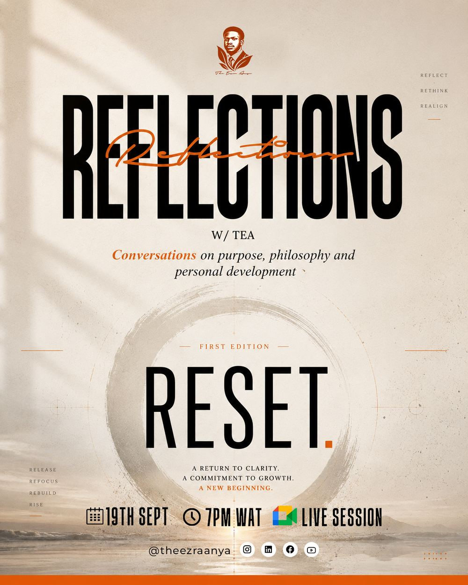

Reflect
Most people move from season to season without stopping to understand what the season meant. Reflections W/ TEA makes room to slow down and look honestly at what is happening in your life, the reality behind the performance.

A monthly teaching by Ezra Anya
Where introspection meets illumination.
Who you are with, and what it costs.
Reflections W/ TEA · Edition 03
The people question. Who you are with and what it costs.
The people around you are shaping who you become, whether you choose them on purpose or by default. This session looks at friendship, family, love and work through Scripture and research, and helps you decide which ties to deepen and where to draw a line.
The annual reckoning. Where did the year go, and what will you carry into the next one? Registration opens after Edition 03.
The three pillars
Most people move from season to season without stopping to understand what the season meant. Reflections W/ TEA makes room to slow down and look honestly at what is happening in your life, the reality behind the performance.
Every session rests on rigorous thinking: Scripture, research, psychology, philosophy and the applied wisdom that has lasted long enough to be trusted. The aim is formation that stays after the feeling fades.
Every session closes with a reorientation. You leave knowing something you did not know when you arrived, and you know what to do with it. The action is specific and the direction is clear.
What to expect
The year of themes
One theme each month, and every theme begins with R. Reset and Renew are behind us, Relationships is open for registration and the rest unlock as the year unfolds. Hover a locked theme for a preview.
From the archive
The first edition went live on 19 September. Stuck is a posture, and postures can change. Reset looked at why smart people stay stuck, the anatomy of a reset and how to break the loop between guilt and inertia.
Edition 02, Renew, followed in October. It named the hidden structure that keeps addictions and negative patterns in place and laid out a way to walk free of them.
Registered attendees receive recordings of past sessions. Ask about access on WhatsApp.

FAQ
A monthly online teaching hosted by Ezra Anya. Each session takes one theme, one question your life is already asking, and explores it with depth, honesty and practical application. You come, you think and you leave with something concrete.
Edition 03, Relationships, is on Saturday 21 November 2026 at 7:00 PM WAT, online. Register with the form on this page and the session link reaches your email before the event.
One hour. Every minute is intentional and the session ends on time.
Yes. Each month has its own registration so the right information for each theme reaches you. It takes under two minutes.
Yes. Registered attendees receive the recording. Attending live is always richer, and the recording is there when life gets in the way.
WhatsApp +234 701 295 4115, the WhatsApp Channel or Substack.
Join the next session
Saturday 21 November 2026 · 7:00 PM WAT · Online
We are live now. Check your email for the link.
Your registration has arrived. The session link reaches your email before Saturday 21 November at 7PM WAT.